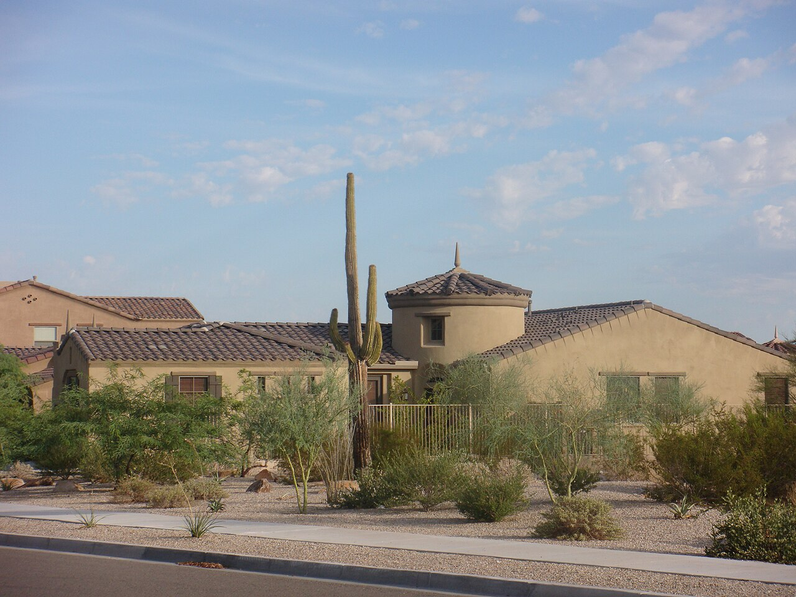
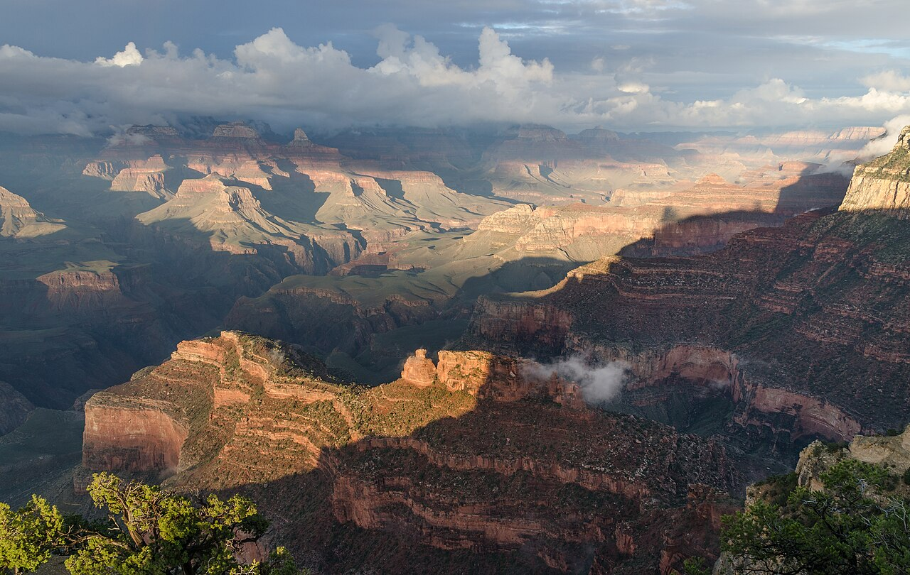
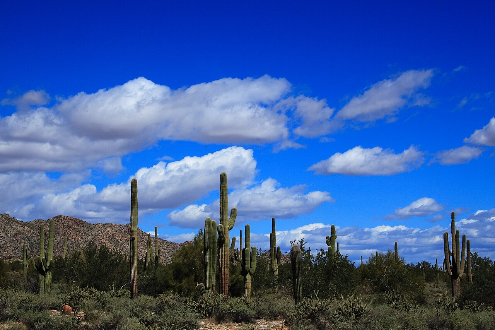

at your door

Estrella Mountain Park
Your home trails, minutes away. Rainbow Valley loop (4.8 mi) rolls through saguaro and wildflowers. Easy after-work sunset walks without touching a freeway.
GoodyearTrails →

One catch out here: timing is everything. The marquee stuff has a season (see when to go).

Your home trails, minutes away. Rainbow Valley loop (4.8 mi) rolls through saguaro and wildflowers. Easy after-work sunset walks without touching a freeway.

The other local park, just north. A short waterfall trail after rain, petroglyphs, and big desert views. Great for the days you want a quick win.

The closest real wilderness. Rugged, remote, and right on the edge of the metro. Day hikes or multi-night backcountry, your pick.
Salt River rafting. The marquee hikes. Lakeside Festival in March. The best window, period.
Havasu and Grand Canyon reopen for comfort. State Fair derbies in October. NASCAR Championship in November.
Too hot for big hikes. Switch to early-morning desert walks, the lakes, and indoor nights.
Start small: a sunset hike at Estrella, minutes from the door. Save the road trips for a cooler month.